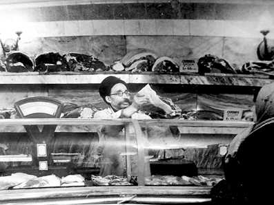
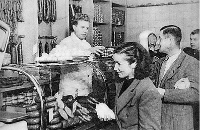
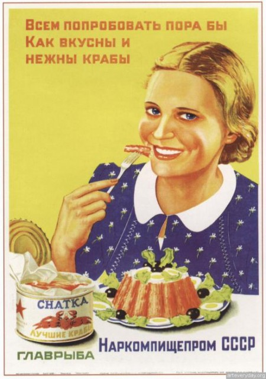

http://lenin-kerrigan.livejournal.com/512765.html
Валерий Антонович Торгашев
Сталинский СССР — золотой век цивилизации
Предлагаю вашему вниманию письмо профессора Валерия Антоновича Торгашева которое он выслал Николаю Старикову, в котором он вспоминает каким был СССР его детства, послевоенный Сталинский СССР а также, как совершенно осознанно Хрущев уничтожал эту социальную идиллию после своего прихода к власти.
«Уважаемый Николай Викторович! Я с интересом слежу за Вашими выступлениями, поскольку во многом наши позиции, как по истории, так и по современности совпадают.
В одном из своих выступлений Вы справедливо заметили, что послевоенный период нашей истории практически не отражен в исторических исследованиях. А этот период был совершенно уникальным в истории СССР. Все без исключения негативные черты социалистической системы и СССР, в частности, появились лишь после 1956 года, а СССР после 1960 года был абсолютно не похож на ту страну, которая была ранее. Впрочем, и довоенный СССР также существенно отличался от послевоенного. В том СССР, который я хорошо помню, плановая экономика эффективно сочеталась с рыночной, и частных хлебопекарен было больше, чем государственных хлебозаводов. В магазинах было изобилие разнообразных промышленных и продовольственных товаров, большая часть которых производилась частным сектором, и не существовало понятие дефицита. Каждый год с 1946 по 1953 гг. жизнь населения заметно улучшалась. Средняя советская семья в 1955 году жила лучше, чем средняя американская семья в том же году и лучше, чем современная американская семья из 4 человек с ежегодным доходом 94 тысячи долларов. О современной России и говорить не приходится. Я посылаю Вам материал, основанный на моих личных воспоминаниях, на рассказах моих знакомых, которые были старше меня в то время, а также на секретных исследованиях семейных бюджетов, которые ЦСУ СССР проводило вплоть до 1959 года. Я был бы очень признателен Вам, если бы Вы сумели донести этот материал до Вашей широкой аудитории, если сочтете его интересным. У меня сложилось впечатление, что кроме меня об этом времени уже никто не помнит».
С уважением, Валерий Антонович Торгашев, д.т.н., профессор.
Вспоминая СССР
Считается, что в России в ХХ веке произошло 3 революции: в феврале и октябре 1917 года и в 1991 году. Иногда называют и 1993 год. В результате февральской революции в течении нескольких дней изменилась политическая система. В результате октябрьской революции изменилась как политическая, так и экономическая система страны, но процесс этих изменений растянулся на несколько месяцев. В 1991 году распался Советский Союз, но никаких изменений политической или экономической системы в этом году не происходило. Политическая система изменилась в 1989 году, когда КПСС утратила власть как фактически, так и формально в связи с отменой соответствующей статьи Конституции. Экономическая система СССР изменилась еще в 1987 году, когда появился негосударственный сектор экономики в виде кооперативов. Таким образом, революция произошла не в 1991 году, в 1987 и осуществляли ее, в отличие от революций 1917 года, люди, находившиеся тогда у власти.
Помимо указанных выше революций была еще одна, о которой до сих пор не было написано ни одной строчки. В ходе этой революции произошли кардинальные изменения как политической, так и экономической системы страны. Эти изменения привели к существенному ухудшению материального положения практически всех слоев населения, снижению производства сельскохозяйственных и промышленных товаров, сокращению ассортимента этих товаров и снижению их качества, повышению цен. Речь идет о революции 1956-1960 годов, осуществленной Н.С.Хрущевым. Политическая составляющая этой революции заключалась в том, что после пятнадцатилетнего перерыва возвращалась власть партийному аппарату на всех уровнях, начиная от парткомов предприятий и кончая ЦК КПСС. В 1959-1960 годах был ликвидирован негосударственный сектор экономики (предприятия промысловой кооперации и приусадебные участки колхозников) обеспечивавший производство значительной части промышленных товаров (одежда, обувь, мебель, посуда, игрушки и т.д.), продовольствия (овощи, продукты животноводства и птицеводства, рыбная продукция), а также бытовых услуг. В 1957 году был ликвидирован Госплан и отраслевые министерства (кроме оборонных). Таким образом, вместо эффективной комбинации плановой и рыночной экономики не стало ни той, ни другой. В 1965 году после удаления Хрущева из власти Госплан и министерства были восстановлены, но с существенно урезанными правами.
В 1956 году была полностью ликвидирована система материальных и моральных стимулов повышения эффективности производства, внедренная еще в 1939 году во все отрасли народного хозяйства и обеспечившая в послевоенный период рост производительности труда и национального дохода существенно выше, чем в других странах, включая США, исключительно за счет собственных финансовых и материальных ресурсов. В результате ликвидации этой системы появилась уравниловка в оплате труда, исчезла заинтересованность в конечном результате труда и качестве производимой продукции. Уникальность хрущевской революции заключалась в том, что изменения растянулись на несколько лет и прошли совершенно незаметно для населения.
Уровень жизни населения СССР в послевоенный период ежегодно повышался и достиг максимума в год смерти Сталина в 1953 году. В 1956 году доходы людей, занятых в сфере производства и науки снижаются в результате ликвидации выплат, стимулирующих эффективность труда. В 1959 году резко сокращаются доходы колхозников в связи с урезанием приусадебных участков и ограничениями на содержание скота в частной собственности. Цены на продукцию, продаваемую на рынках, поднимаются в 2-3 раза. C 1960 года началась эпоха тотального дефицита промышленных и продовольственных товаров. Именно в этом году открылись валютные магазины «Березка» и спецраспределители для номенклатуры, в которых ранее не было необходимости. В 1962 году поднимаются государственные цены на основные продукты питания примерно в 1.5 раза. В целом жизнь населения опустилась до уровня конца сороковых годов.
До 1960 года в таких областях как здравоохранение, образование, наука и инновационные области промышленности (атомная промышленность, ракетостроение, электроника, вычислительная техника, автоматизированные производства) СССР занимал ведущие позиции в мире. Если брать экономику в целом, то СССР уступал лишь США, но значительно опережал любые другие страны. При этом СССР до 1960 года активно догонял США и так же активно уходил вперед от остальных стран. После 1960 года темпы роста экономики неуклонно снижаются, ведущие позиции в мире утрачиваются.
В предлагаемых ниже материалах я постараюсь подробно рассказать, как жили обычные люди в СССР в 50-х годах прошлого века. Опираясь на собственные воспоминания, рассказы людей, с которыми меня сталкивала жизнь, а также на некоторые документы той поры, которые доступны в Интернете, я постараюсь показать, насколько далеки от реальности современные представления о совсем недавнем прошлом великой страны.
Эх, хорошо в стране советской жить!
Сразу после окончания войны жизнь населения СССР начинает резко улучшаться. В 1946 году на 20% повышается зарплата рабочих и инженерно-технических работников (ИТР), работающих на предприятиях и стройках Урала, Сибири и Дальнего Востока. В том же году на 20% повышаются должностные оклады людей имеющих высшее и среднее специальное образование (ИТР, работники науки, образования и медицины). Поднимается значимость ученых степеней и званий. Зарплата профессора, доктора наук повышается с 1600 до 5000 рублей, доцента, кандидата наук — с 1200 до 3200 рублей, ректора вуза с 2500 до 8000 рублей. В научно-исследовательских институтах ученая степень кандидата наук стала добавлять к должностному окладу 1000 рублей, а доктора наук – 2500 рублей. В это же время зарплата союзного министра составляла 5000 рублей, а секретаря райкома партии – 1500 рублей. Сталин, как Председатель Совета Министров СССР, имел оклад 10 тысяч рублей. Ученые в СССР того времени имели и дополнительные доходы, иногда превышающие зарплату в несколько раз. Поэтому они являлись наиболее богатой и одновременно наиболее уважаемой частью советского общества.
В декабре 1947 года происходит событие, которое по эмоциональному воздействию на людей было соизмеримо с окончанием войны. Как было сказано в Постановлении Совета Министров СССР и ЦК ВКП(б) № 4004 от 14 декабря 1947 года «… с 16 декабря 1947 года отменяется карточная система снабжения продовольственными и промышленными товарами, отменяются высокие цены по коммерческой торговле и вводятся единые сниженные государственные розничные цены на продовольствие и промтовары…».
Карточная система, позволившая во время войны спасти от голодной смерти множество людей, после войны вызывала сильный психологический дискомфорт. Ассортимент продовольственных товаров, которые продавались по карточкам, был крайне беден. Например, в булочных было лишь 2 сорта хлеба ржаной и пшеничный, которые продавались на развес в соответствии с нормой, указанной в отрезном талоне. Выбор других продовольственных товаров также был невелик. В то же время в коммерческих магазинах было такое изобилие продуктов, которому могли бы позавидовать любые современные супермаркеты. Но цены в этих магазинах были недоступны для большинства населения, и продукты там приобретались лишь для праздничного стола. После отмены карточной системы все это изобилие оказалось в обычных гастрономах по вполне приемлемым ценам. Например, цена на пирожные, которые ранее продавались только в коммерческих магазинах, снизилась с 30 до 3 рублей. Более чем в 3 раза упали рыночные цены на продукты. Промышленные товары до отмены карточной системы продавались по специальным ордерам, наличие которых еще не означало доступность соответствующих товаров. После отмены карточек некоторое время сохранялся определенный дефицит промышленных товаров, но, насколько я помню, в 1951 году в Ленинграде этого дефицита уже не было.
1 марта 1949-1951 годов происходят дальнейшие снижения цен, в среднем на 20% в год. Каждое снижение воспринималось как всенародный праздник. Когда 1 марта 1952 года очередного снижения цен не произошло, у людей возникло чувство разочарования. Однако 1 апреля того же года снижение цен все же состоялось. Последнее снижение цен произошло уже после смерти Сталина 1 апреля 1953 года. За послевоенный период цены на продовольствие и наиболее ходовые промышленные товары снизились в среднем более чем в 2 раза. Итак, восемь послевоенных лет жизнь советского народа ежегодно заметно улучшалась. За всю известную историю человечества ни в одной стране похожих прецедентов не наблюдалась.
Уровень жизни населения СССР в середине 50-х годов можно оценить, изучая материалы исследований бюджетов семей рабочих, служащих и колхозников, которые проводило Центральное Статистическое Управление (ЦСУ) СССР с 1935 по 1958 год (эти материалы, которые в СССР имели гриф «секретно», опубликованы на сайте istmat.info). Бюджеты изучались у семей, относящихся к 9 группам населения: колхозники, рабочие совхозов, рабочие промышленности, ИТР промышленности, служащие промышленности, учителя начальной школы, учителя средней школы, врачи и средний медперсонал. Наиболее обеспеченная часть населения, к которой относились работники предприятий оборонной промышленности, проектных организаций, научных учреждений, преподаватели вузов, работники артелей и военные, к сожалению, не попала в поле зрения ЦСУ.
Из перечисленных выше исследуемых групп наибольший доход был у врачей. На каждого члена их семей приходилось 800 рублей ежемесячного дохода. Из городского населения наименьший доход был у служащих промышленности – 525 рублей в месяц приходилось на каждого члена семьи. У сельского населения душевой ежемесячный доход составлял 350 рублей. При этом, если у рабочих совхозов этот доход был в явной денежной форме, то у колхозников он получался при расчете по государственным ценам стоимости собственных продуктов, потребляемых в семье.
Потребление продуктов находилось у всех групп населения, включая сельское, примерно на одном уровне 200-210 рублей в месяц на члена семьи. Лишь в семьях врачей стоимость продуктовой корзины достигала 250 рублей за счет большего потребления сливочного масла, мясных продуктов, яиц, рыбы и фруктов при сокращении хлеба и картофеля. Сельские жители потребляли больше всех хлеба, картофеля, яиц и молока, но значительно меньше сливочного масла, рыбы, сахара и кондитерских изделий. Следует заметить, что сумма 200 рублей, затрачиваемая на питание, не была напрямую связана с доходом семьи или ограниченным выбором продуктов, а определялась семейными традициями. В моей семье, состоящей в 1955 году из четырех человек, включая двух школьников, ежемесячный доход на человека составлял 1200 рублей. Выбор продуктов в Ленинградских гастрономах был значительно шире, чем в современных супермаркетах. Тем не менее, расходы нашей семьи на еду, включая школьные завтраки и обеды в ведомственных столовых у родителей, не превышали 800 рублей в месяц.
Очень дешевой была еда в ведомственных столовых. Обед в студенческой столовой, включающий суп с мясом, второе с мясом и компот или чай с пирожком, стоил около 2 рублей. Бесплатный хлеб всегда был на столах. Поэтому в дни перед выдачей стипендии некоторые студенты, живущие самостоятельно, покупали чай за 20 копеек и наедались хлебом с горчицей и чаем. Кстати, соль, перец и горчица, также всегда стояли на столах. Стипендия в институте, где я учился, начиная с 1955 года, составляла 290 рублей (при отличных оценках – 390 рублей). 40 рублей у иногородних студентов уходило на оплату общежития. Оставшихся 250 рублей (7500 современных рублей) вполне хватало на нормальную студенческую жизнь в большом городе. При этом, как правило, иногородние студенты не получали помощи из дома и не подрабатывали в свободное время.
Несколько слов о ленинградских гастрономах того времени. Наибольшим разнообразием отличался рыбный отдел. Несколько сортов красной и черной икры было выставлено в больших мисках. Полный ассортимент белой рыбы горячего и холодного копчения, красная рыба от кеты до семги, копченые угри и маринованные миноги, селедка в банках и бочках. Живая рыба из рек и внутренних водоемов доставлялась сразу после вылова в специальных автоцистернах с надписью «рыба». Мороженой рыбы не было. Она появилась лишь в начале 60-х годов. Было множество рыбных консервов, из которых я помню бычки в томате, вездесущих крабов по 4 рубля за банку и любимый продукт студентов, живущих в общежитии – тресковую печень. Говядина и баранина делилась на четыре категории с различной ценой, в зависимости от части туши. В отделе полуфабрикатов были представлены лангеты, антрекоты, шницеля и эскалопы. Разнообразие колбас было существенно шире, чем сейчас, а их вкус я помню до сих пор. Сейчас лишь в Финляндии можно попробовать колбасу, напоминающую советскую из тех времен. Следует сказать, что вкус вареных колбас изменился уже в начале 60-х годов, когда Хрущев предписал добавлять в колбасы сою. Это предписание проигнорировали лишь в прибалтийских республиках, где еще в 70-х годах можно было купить нормальную докторскую колбасу. Бананы, ананасы, манго, гранаты, апельсины продавались в крупных гастрономах или специализированных магазинах круглый год. Обычные овощи и фрукты нашей семьей приобретались на рынке, где небольшое повышение цены окупалось более высоким качеством и возможностью выбора.
Так выглядели полки обычных советских гастрономов в 1953 году. После 1960 года такого уже не было.
 
Приведенный ниже плакат относится к довоенной поре, но банки с крабами были во всех советских магазинах и в пятидесятые годы.

В упоминавшихся выше материалах ЦСУ приводятся данные о потреблении в семьях рабочих продуктов питания в различных регионах РСФСР. Из двух десятков наименований продуктов лишь для двух позиций имеется существенный разброс (более 20%) от среднего уровня потребления. Сливочное масло, при среднем уровне потребления по стране в количестве 5.5 кг в год на одного человека, в Ленинграде потреблялось в количестве 10.8 кг, в Москве – 8.7 кг, а в Брянской области – 1.7 кг, в Липецкой – 2.2 кг. Во всех остальных областях РСФСР душевое потребление сливочного масла в семьях рабочих было выше 3 кг. Аналогичная картина и по колбасе. Средний уровень – 13 кг. В Москве – 28.7 кг, в Ленинграде – 24.4 кг, в Липецкой области – 4.4 кг, в Брянской – 4.7 кг, в остальных областях – более 7 кг. При этом доход в семьях рабочих в Москве и Ленинграде не отличался от среднего дохода по стране и составлял 7000 рублей в год на члена семьи. В 1957 году я побывал в приволжских городах: Рыбинск, Кострома, Ярославль. Ассортимент продовольственных товаров был ниже, чем в Ленинграде, но и сливочное масло и колбаса лежали на прилавках, а разнообразие рыбных продуктов, пожалуй, было даже выше, чем в Ленинграде. Таким образом, население СССР, по меньшей мере, с 1950 года по 1959 год было полностью обеспечено продовольствием.
Ситуация с продовольствием кардинально ухудшается, начиная с 1960 года. Правда, в Ленинграде это было не очень заметно. Я могу вспомнить лишь исчезновение из продажи импортных фруктов, консервированной кукурузы и, что было более значимо для населения, муки. При появлении муки в каком-либо магазине выстраивались громадные очереди, и в одни руки продавалось не более двух килограмм. Это были первые очереди, которые я видел в Ленинграде с конца 40-х годов. В менее крупных городах, по рассказам моих родственников и знакомых, помимо муки из продажи исчезли: сливочное масло, мясо, колбаса, рыба (кроме небольшого набора консервов), яйца, крупы и макароны. Резко сократился ассортимент хлебобулочных изделий. Я сам наблюдал пустые полки в продовольственных магазинах Смоленска в 1964 году.
О жизни сельского населения я могу судить лишь по нескольким отрывочным впечатлениям (не считая бюджетных исследований ЦСУ СССР). В 1951, 1956 и 1962 годах я отдыхал летом на черноморском побережье Кавказа. В первом случае я ездил с родителями, а затем — самостоятельно. В то время поезда имели продолжительные стоянки на станциях и даже небольших полустанках. В 50-х годах к поездам выходили местные жители с разнообразными продуктами, среди которых были: вареные, жареные и копченые куры, вареные яйца, домашние колбасы, горячие пирожки с разнообразными начинками, включая рыбу, мясо, печень, грибы. В 1962 году из еды к поездам выносили лишь горячую картошку с солеными огурцами.
Летом 1957 года я входил в состав студенческой концертной бригады, организованной Ленинградским обкомом ВЛКСМ. На небольшой деревянной барже мы плыли вниз по течению Волги и давали концерты в прибрежных деревнях. Развлечений в то время в селах было немного, и потому на наши концерты в местные клубы приходили практически все жители. Ни по одежде, ни по выражению лиц они не отличались от городского населения. А ужины, которыми нас угощали после концерта, свидетельствовали, что проблем с продовольствием даже в небольших деревнях не было.
В начале 80-х годов я лечился в санатории, расположенном в Псковской области. Однажды я пошел в близлежащую деревню с целью попробовать деревенского молока. Встреченная мною словоохотливая старушка быстро развеяла мои надежды. Она рассказала, что после хрущевского запрета 1959 года на содержание скота и урезания приусадебных участков деревня полностью обнищала, и предыдущие годы вспоминались как золотой век. С тех пор мясо полностью исчезло из рациона деревенских жителей, а молоко лишь иногда выдавалось с колхозной фермы для маленьких детей. А раньше мяса было достаточно и для собственного потребления и для продажи на колхозном рынке, что и обеспечивало основной доход крестьянской семьи, а совсем не колхозные заработки. Замечу, что по статистике ЦСУ СССР в 1956 году каждый сельский житель РСФСР потреблял более 300 литровмолока в год, в то время как городские жители потребляли 80-90 литров. После 1959 года ЦСУ прекратило свои секретные бюджетные исследования.
Обеспеченность населения промышленными товарами в середине 50-х годов была достаточно высокой. Например, в рабочих семьях на каждого человека ежегодно приобреталось более 3 пар обуви. Качество и разнообразие потребительских товаров исключительно отечественного производства (одежда, обувь, посуда, игрушки, мебель и другие бытовые товары) было намного выше, чем в последующие годы. Дело в том, что основная часть этих товаров выпускалась не государственными предприятиями, а артелями. Причем продавалась продукция артелей в обычных государственных магазинах. Как только появлялись новые тенденции в моде, они мгновенно отслеживались, и уже через несколько месяцев модные товары появлялись в изобилии на полках магазинов. Например, в середине 50-х годов возникла молодежная мода на туфли с толстой каучуковой подошвой белого цвета в подражание крайне популярному в те годы исполнителю песен в стиле рок-н-ролл Элвису Пресли. Эти туфли отечественного производства я спокойно приобрел в обычном универмаге осенью 1955 года наряду с другим модным предметом – галстуком с яркой цветной картинкой. Единственный товар, который не всегда можно было купить, это популярные грамзаписи. Тем не менее, у меня в 1955 году были пластинки, купленные в обычном магазине, почти всех популярных в то время американских джазовых музыкантов и певцов, таких как Дюк Эллингтон, Бенни Гудман, Луи Армстронг, Элла Фитцжеральд, Глен Миллер. Лишь записи Элвиса Пресли, нелегально выполненные на использованной рентгеновской пленке (как тогда говорили, «на костях») приходилось покупать с рук. Я не помню в тот период импортных товаров. И одежда и обувь выпускались небольшими партиями и отличались широким разнообразием моделей. Кроме того, было широко распространено изготовление одежды и обуви по индивидуальным заказам в многочисленных швейных и трикотажных ателье, в обувных мастерских, входящих в состав промысловой кооперации. Немало было портных и сапожников, работавших индивидуально. Самым ходовым товаром в то время были ткани. Я до сих пор помню названия таких популярных в то время тканей как драп, шевиот, бостон, крепдешин.
С 1956 по 1960 годы проходил процесс ликвидации промысловой кооперации. Основная часть артелей стала государственными предприятиями, а остальные были закрыты или перешли на нелегальное положение. Индивидуальное производство по патентам также было запрещено. Резко сократилось производство практически всех товаров широкого потребления, как по объему, так и по ассортименту. Именно тогда появляются импортные потребительские товары, которые сразу становятся дефицитными, несмотря на более высокую цену при ограниченном ассортименте.
Проиллюстрировать жизнь населения СССР в 1955 году я могу на примере своей семьи. Семья состояла из 4-х человек. Отец, 50 лет, начальник отдела проектного института. Мать, 45 лет, инженер-геолог Ленметростроя. Сын, 18 лет, выпускник средней школы. Сын, 10 лет, школьник. Доход семьи состоял из трех частей: должностной оклад (2200 рублей у отца и 1400 рублей у мамы), ежеквартальная премия за выполнение плана обычно 60% от оклада и отдельно премия за сверхплановые работы. Получала ли такую премию мама, я не знаю, а отец получал ее примерно раз в год, и в 1955 году эта премия составила 6000 рублей. В другие годы она имела примерно такую же величину. Я помню, как отец, получив эту премию, раскладывал множество сторублевых купюр на обеденном столе в виде карточного пасьянса, а затем мы устраивали праздничный ужин. В среднем ежемесячный доход нашей семьи составлял 4800 рублей или 1200 рублей на человека.
Из указанной суммы 550 рублей вычиталось на налоги, партийные и профсоюзные взносы. На питание уходило 800 рублей. 150 рублей тратилось на оплату жилья и коммунальные услуги (вода, отопление, электроэнергия, газ, телефон). 500 рублей расходовалось на одежду, обувь, транспорт, развлечения. Таким образом, регулярные ежемесячные расходы нашей семьи из 4 человек составляли 2000 рублей. Неизрасходованных денег оставалось 2800 рублей в месяц или 33600 рублей (миллион современных рублей) в год.
Доходы нашей семьи были ближе к среднему уровню, чем к верхнему. Так более высокие доходы были у работников частного сектора (артелей), которые составляли более 5% городского населения. Высокие зарплаты были у офицеров армии, МВД, МГБ. Например, обычный армейский лейтенант командир взвода имел ежемесячный доход в размере 2600-3600 рублей в зависимости от места и специфики службы. При этом доходы военных не облагались налогом. Для иллюстрации доходов работников оборонной промышленности приведу лишь пример хорошо мне знакомой молодой семьи, работавшей в опытно-конструкторском бюро министерства авиационной промышленности. Муж, 25 лет, старший инженер с окладом 1400 рублей и ежемесячным доходом с учетом различных премий и командировочных 2500 рублей. Жена, 24 года, старший техник с окладом 900 рублей и ежемесячным доходом 1500 рублей. В целом ежемесячный доход семьи из двух человек составлял 4000 рублей. В год оставалось около 15 тысяч рублей неизрасходованных денег. Полагаю, что значительная часть городских семей имела возможность ежегодно откладывать 5-10 тысяч рублей (150-300 тысяч современных рублей).
Из дорогостоящих товаров следует выделить автомобили. Ассортимент автомобилей был невелик, но проблем с их приобретением не было. В Ленинграде в большом универмаге «Апраксин двор» находился автомобильный салон. Я помню, что в 1955 году там были выставлены для свободной продажи автомобили: Москвич-400 за 9000 рублей (эконом-класс), Победа за 16000 рублей (бизнес-класс) и ЗИМ (впоследствии Чайка) за 40000 рублей (представительский класс). Наших семейных сбережений было достаточно для приобретения любого из перечисленных выше автомобилей, включая ЗИМ. А автомобиль Москвич вообще был доступен для большинства населения. Тем не менее, реального спроса на автомобили не было. В то время автомобили рассматривались как дорогостоящие игрушки, создающие массу проблем по содержанию и обслуживанию. У моего дяди был автомобиль Москвич, на котором он всего несколько раз в год выезжал за город. Приобрел этот автомобиль дядя еще в 1949 году только потому, что во дворе своего дома в помещении бывших конюшен он мог обустроить гараж. Отцу на работе предлагали купить списанный американский Виллис, военный внедорожник того времени, всего за 1500 рублей. Отец отказался от машины, так как держать ее было негде.
Для советских людей послевоенной поры было характерно стремление иметь как можно больший денежный запас. Они хорошо помнили, что в годы войны деньги могли спасти жизнь. В самый трудный период жизни блокадного Ленинграда функционировал рынок, где можно было купить или обменять на вещи любое продовольствие. В ленинградских записках моего отца, датированных декабрем 1941 года, указывались такие цены и вещевые эквиваленты на этом рынке:1 кг муки = 500 рублей = валенки, 2 кг муки = каракулевая шуба, 3 кг муки = золотые часы. Однако похожая ситуация с продовольствием была не только в Ленинграде. Зимой 1941-1942 годов небольшие провинциальные города, где не было военной промышленности, вообще не снабжались продовольствием. Население этих городов выживало лишь за счет обмена бытовых товаров на продукты с жителями окрестных деревень. Моя мама в это время работала учителем младших классов в старинном русском городе Белозерск, на своей родине. Как впоследствии она рассказывала, к февралю 1942 года умерло от голода более половины ее учеников. Мы с мамой выжили только потому, что в нашем доме еще с дореволюционных времен было довольно много вещей, которые ценились на селе. Но бабушка моей мамы также умерла от голода в феврале 1942 года, поскольку оставляла свою еду для внучки и четырехлетнего правнука. Единственное мое яркое воспоминание той поры – новогодний подарок от мамы. Это был кусок черного хлеба, слегка посыпанный сахарным песком, который мама называла пирожным. Настоящее пирожное я попробовал лишь в декабре 1947, когда неожиданно стал богатеньким Буратино. В моей детской копилке оказалось более 20 рублей мелочи, а монеты сохранялись и после денежной реформы. Лишь с февраля 1944 года, когда после снятия блокады мы вернулись в Ленинград, я перестал испытывать непрерывное чувство голода. К середине 60-х годов сгладилась память об ужасах войны, в жизнь вступило новое поколение, не стремившееся откладывать деньги про запас, и автомашины, к тому времени подорожавшие в 3 раза, стали дефицитом, как и многие другие товары.
Назову некоторые цены в 1955 году: ржаной хлеб – 1 руб./кг, булка — 1.5 руб./0.5 кг, мясо — 12.5–18 руб./кг, живая рыба (карп) – 5 руб./кг, осетровая икра – 180 руб./кг, обед в столовой — 2-3 рубля, ужин в ресторане с вином на двоих – 25 руб., кожаные туфли — 150-250 руб., 3-скоростной велосипед Турист – 900 руб., мотоцикл ИЖ-49 с двигателем 350 куб. см – 2500 руб., билет в кино — 0.5-1 руб., билет в театр или на концерт — 3-10 руб.
Попытаемся оценить жизненный уровень населения СССР в 1955 году путем сравнения семейных бюджетов советских и американских семей, состоящих из четырех человек (двое взрослых и двое детей). В качестве примера приведем 3 американские семьи: среднестатистическая американская семья в 1955 году по данным Бюро Переписи Населения США, среднестатистическая американская семья в 2010 году по данным министерства труда США и конкретная американская семья из штата Вирджиния, согласившаяся рассказать о своем бюджете 2011 года.
С советской стороны рассмотрим бюджеты сельской и городской среднестатистических семей 1955 года из четырех человек по материалам ЦСУ СССР и мою собственную семью 1966 года, когда я вел ежедневные записи семейных доходов и расходов.
Поскольку двум странам и трем периодам времени соответствуют различные денежные единицы, при рассмотрении всех бюджетов будем использовать сталинский рубль 1947 года. В 1955 году этот рубль по покупательной способности был примерно равен современному доллару или 30 нынешним российским рублям. Американский доллар 1955 года соответствовал 6 сталинским рублям (по золотому курсу – 4 рублям). В 1961 году в результате хрущевской денежной реформы произошла деноминация рубля в 10 раз. Однако к 1966 году повышение государственных и рыночных цен привело к снижению покупательной способности рубля примерно в 1.6 раза, так что хрущевский рубль стал эквивалентен не 10, а 6 сталинским рублям (по золотому курсу 1961 года 1 доллар = 90 копеек).

Некоторые пояснения к приведенной выше таблице. Обучение в школе, в которую ходят дети третьей американской семьи (6 и 10 лет) является бесплатным. Но за школьные завтраки ($2.5), школьный автобус и пребывание в группе продленного дня приходится платить 5 тысяч долларов в год за каждого ребенка. В связи с этим непонятно отсутствие расходов на школу у статистических американских семей. В СССР 1955 года горячий школьный завтрак стоил 1 рубль, школа находилась рядом с домом, а группа продленного дня была бесплатной. Повышенные расходы на еду у более зажиточной американской семьи объясняются тем, что часть продуктов покупается в «экологически чистом» магазине по более высоким ценам. Кроме того, ежедневные обеды во время работы обходятся главе семьи в 2500 долларов в год. К развлечениям у этой семьи можно отнести традиционный еженедельный ужин в ресторане ($50 сам ужин и $30 оплата няни, сидящей дома с детьми), а также занятия плаванием детей в бассейне под руководством тренера (раз в неделю– $90). Из бытовых расходов на оплату уборки помещений два раза в месяц и на прачечную уходит $2800, а на обувь, одежду и игрушки для детей – $4200.
Третью советскую семью из приведенной выше таблицы следует отнести скорее к бедной, чем к среднестатистической. Я являлся аспирантом очного обучения. Мой доход состоял из стипендии 1000 номинальных сталинских рублей и половины ставки младшего научного сотрудника 525 рублей. Жена являлась студенткой и получала стипендию 290 рублей. Налоги со стипендий и зарплаты, меньшей 700 рублей, не брались. Дочке было всего два года, и для детского сада она была еще мала. Поэтому в семье постоянно жила няня, получавшая 250 рублей. Ассортимент приобретаемых продуктов был весьма разнообразен. Более трети от стоимости продуктовой корзины составляли фрукты. Из бюджетных записок не видно стремления ограничить расходы. Например, несколько раз в месяц отмечались расходы на такси. Семья из четырех человек, включая няню, жила в двухкомнатной кооперативной квартире, приобретенной в 1963 году, когда я только что женился и работал старшим инженером на оборонном предприятии. Тогда моих накоплений за два года работы после окончания института было достаточно для оплаты первоначального взноса за квартиру в размере 19 тысяч сталинских рублей (40% полной стоимости). Летом 6 недель мы отдыхали на черноморском побережье Крыма, куда выезжали с палаткой, устанавливаемой непосредственно на берегу. Замечу, что рассмотренная выше зажиточная американская семья могла себе позволить лишь недельный отпуск на берегу моря в Северной Каролине, причем 3 тысячи долларов, затраченных на этот отдых, вышли за пределы годового бюджета семьи. А бедная советская семья из трех человек с годовым бюджетом 13 тысяч современных долларов (далеко за чертой бедности по нынешним американским меркам) потребляла разнообразную экологически чистую еду, выплачивала кредит по ипотеке, нанимала няню для постоянного ухода за ребенком и проводила продолжительный летний отпуск на берегу теплого моря.
Ранее была рассмотрена типичная молодая советская семья середины 50-х годов из двух человек (муж – 2 года после технического вуза, жена – 2 года после техникума) с чистым ежемесячным доходом после вычета налогов 3400 рублей или 100 тысяч современных рублей. Чистый доход аналогичной российской семьи в том редком случае, когда муж и жена работают по специальности, составит в Москве или Санкт-Петербурге не более 40 тысяч рублей, а в провинции ниже еще в 1.5-2 раза. Почувствуйте разницу!!!
Итак, материальный уровень жизни населения СССР в середине 50-х годов был выше, чем в США, самой богатой стране того времени, и выше, чем в современной Америке, не говоря уже о современной России. Кроме того, населению СССР предоставлялись блага, немыслимые для любых других стран мира:в завтрашнем дне.
- сеть молочных кухонь, обеспечивавшая бесплатное питание младенцев до 2 лет;
- широкая сеть дошкольных учреждений (детские ясли и сады) с минимальной оплатой содержания детей – 30-40 рублей в месяц, а для колхозников бесплатно;
- летний отдых детей в пионерских лагерях за набольшую плату или бесплатно;
- детские музыкальные школы, позволяющие детям получить музыкальное образование и на ранней стадии выявить музыкальные таланты;
- детские спортивные школы, в том числе интернаты;
- бесплатные группы продленного дня в школах;
- Дома пионеров и Дворцы пионеров, бесплатно обеспечивающие досуг детей;
- Дома культуры и Дворцы культуры, обеспечивающие досуг взрослых
- спортивные общества, обеспечивавшие физическое воспитание населения;
- широкая сеть санаториев, Домов отдыха, туристских баз, обеспечивавшая лечение и отдых бесплатно или за небольшую плату, доступную для всех слоев населения;
- широчайшие возможности получения бесплатного образования и повышения квалификации для всех слоев населения в дневной, вечерней или заочной форме;
- арантированное жилье и работа по специальности, максимальная социальная защита, полная уверенность в завтрашнем дне.
Несколько слов о платности образования в сталинское время. В 1940 году была введена плата за обучение в старших классах средней школы, в вузах и техникумах. В Москве, Ленинграде и столицах союзных республик стоимость обучения в старших классах составляла 200 рублей в год, а в вузах и техникумах – 400 рублей в год. В остальных городах – соответственно 150 и 300 рублей в год. В сельских школах обучение было бесплатным. Из анализа семейных бюджетов видно, что указанные суммы носили символический характер. В 1956 году оплата обучения была отменена.
По официальной статистике жизненный уровень населения СССР непрерывно рос вплоть до момента его распада. Однако реальная жизнь нечего общего с этой статистикой не имела. Например, цена типового обеда (лагман, плов, лепешка, зеленый чай) в моем любимом московском ресторане «Узбекистан», в котором я бывал при любом посещении Москвы, составляла в хрущевских рублях: 1955 г. — 1,1963 г. – 2,1971 г. – 5, 1976 – 7,1988 г. – 10. Цена автомобиля Москвич: 1955 г. – 900,1963 г. – 2500,1971 г. – 4900,1976 г. – 6300,1988 г. – 9000. За четверть века реальные цены выросли в 10 раз, а доходы, в частности, ИТР и ученых уменьшились. Самыми богатыми людьми в СССР уже с середины 60-х годов стали не ученые, как было ранее, а работники торговли и номенклатура.
От каждого по способностям, каждому по труду.
В конце 30-х годов приведенный выше лозунг, характеризующий экономическую суть социализма, приобрел конструктивные, лишенные субъективизма черты и стал широко внедряться во всех сферах народного хозяйства СССР, обеспечив в послевоенный период невиданные ранее темпы развития страны. Инициатором разработки метода повышения эффективности труда, который я назвал МПЭ, скорее всего, был Л.П. Берия, который будучи в 30-х годах партийным руководителем Грузии, превратил ее всего за несколько лет из весьма отсталой в одну из самых экономически развитых и процветающих республик СССР. Для реализации этого лозунга не надо было обладать никакими экономическими знаниями, а следовало руководствоваться лишь обычным здравым смыслом.
Суть предложенного метода заключалась в разделении любой коллективной деятельности на плановую и сверхплановую. Плановая деятельность заключается в выполнении определенного объема работ в заданные сроки. За плановую деятельность работник получает ежемесячную или еженедельную зарплату, величина которой зависит от его квалификации и стажа работы по специальности. Часть зарплаты выдается в виде квартальных и годовых премий, что обеспечивает заинтересованность сотрудников в выполнении плана (при невыполнении плана весь коллектив лишается премии). У руководства обычно имеется возможность варьировать величину премии, поощряя трудолюбивых и наказывая нерадивых, но на эффективности работы коллектива это сказывается мало. Во всем мире наемные работники занимаются исключительно плановой деятельностью. Но в этом случае у работника нет возможности проявить свои способности. Лишь иногда умный начальник может случайно заметить эти способности и продвинуть работника по служебной лестнице. Но чаще любой выход за пределы определенной планом работы не поощряется, а наказывается.
Гениальность разработчиков МПЭ заключалась в том, что они сумели регламентировать понятие сверхплановой работы для большинства видов коллективной деятельности и разработать лишенную субъективности систему материального и морального поощрения за эту работу. МПЭ позволял каждому работнику реализовать свой творческий потенциал (от каждого по способностям), получить соответствующее вознаграждение (каждому по труду) и вообще почувствовать себя личностью, уважаемым человеком. Другие члены коллектива также получали свою долю вознаграждения, что исключало зависть и трудовые конфликты, которые были характерны для стахановского движения.
Моя трудовая деятельность началась осенью 1958 года, когда я, будучи студентом 4 курса Ленинградского Электротехнического института, стал работать по совместительству в должности техника в опытно-конструкторском бюро ОКБ-590 министерства авиационной промышленности. К этому времени МПЭ уже был ликвидирован, но великолепный моральный климат в коллективе организации, сложившийся благодаря МПЭ, сохранялся вплоть до начала 60-х годов. Тема МПЭ довольно часто возникала при неформальном общении с сослуживцами, работавшими в ОКБ еще с 40-х годов, и завершалась традиционным резюме – «какой гад этот лысый» (имелся ввиду Н.С.Хрущев). О МПЭ мне рассказывал и отец, который в послевоенный период занимался проектированием и строительством шоссейных дорог, а в годы войны был командиром саперного батальона и, в частности, зимой 1942 года создавал знаменитую ленинградскую «дорогу жизни». О том, как МПЭ применялся в вузах и научно-исследовательских институтах мне поведал в 1962 году случайный попутчик в поезде Ленинград-Москва.
Все работы проектных организаций выполнялись по заказам соответствующих министерств. В задании, сопровождавшем заказ, указывались плановые показатели как проекта, так и проектируемого объекта. Такими показателями являлись: сроки выполнения проекта, стоимость проекта (без фонда зарплаты), стоимость проектируемого объекта, а также основные технические характеристики объекта. Одновременно в задании приводилась премиальная шкала за превышение плановых показателей. За сокращение сроков проектирования, уменьшение стоимости проекта или объекта проектирования, улучшения важнейших параметров объекта указывались конкретные значения премии в рублях. У каждого заказа имелся премиальный фонд исключительно для сверхплановых работ в размере 2% от стоимости проекта. Неизрасходованные деньги этого фонда после завершения проекта возвращались Заказчику. Для некоторых особо важных заказов в премиальную шкалу могли включаться автомобили, квартиры и правительственные награды, которые также не всегда оказывались востребованы.
Для каждого проекта руководством организации назначался руководитель, как правило, не занимавший административной должности. Руководитель проекта набирал временный коллектив для выполнения проекта из сотрудников одного или нескольких подразделений организации с согласия руководителей этих подразделений. Иногда в состав этого коллектива могли включаться и сотрудники других организаций, участвующих в проекте. Одного из членов коллектива руководитель проекта назначал своим заместителем. В процессе работы над проектом руководитель мог исключить из коллектива любого члена. Каждый член коллектива независимо от занимаемой должности изначально получал 1 балл, характеризующий долю его участия в работе над проектом. Руководитель получал добавочно 5 баллов, а его заместитель – 3. В процессе работы руководитель мог добавить любому участнику проекта от одного до трех баллов, в зависимости от вклада в проект. Это делалось открыто с объяснением причин всему коллективу. Рационализаторские предложения, обеспечивающие сверхплановые показатели проекта оценивались в 3 балла, а заявки на изобретения — в 5 баллов. Эти баллы авторы делили между собой по взаимному согласованию. К моменту завершения проекта каждый участник знал сумму причитающихся ему премиальных, зависящих от числа набранных баллов и общей суммы сверхплановой премии за проект в соответствии с известными всем премиальными шкалами. Сумма премии окончательно утверждалась на заседании государственной комиссии, осуществляющей приемку проекта, и буквально на следующий день все участники проекта получали причитающиеся им деньги.
В случае проектов с большим бюджетом, выполнявшихся в течение несколько лет стоимость одного балла могла составлять десятки тысяч рублей (десятки тысяч современных долларов). Поэтому все члены коллектива с большим уважением относились к людям, обеспечившим получение таких высоких премий, что создавало отличный моральный климат. Склочники и лентяи либо изначально не попадали во временный коллектив, либо исключались из него в ходе работы над проектом. Лица, набиравшие большое число баллов в различных проектах быстро продвигались по служебной лестнице, то есть МПЭ являлся великолепным механизмом отбора кадров.
Для того, чтобы МПЭ начал работать в промышленности был использован оригинальный подход. В плановые показатели предприятий ежегодно включался пункт о снижении себестоимости производимой продукции на определенное число процентов за счет совершенствования технологии. Для стимулирования этих работ создавался специальный премиальный фонд аналогичный двухпроцентному фонду проектных организаций. А далее применялась та же схема. Создавались временные коллективы с такими же баллами, задачей которых было снижение себестоимости определенной продукции. Одновременно члены этих коллективов выполняли и основную работу. Итоги подводились в конце года и тогда же выплачивались премии. Предприятию давалось право, по меньшей мере, год продавать продукцию с более низкой себестоимостью по старой цене и из этих денег формировать сверхплановый премиальный фонд. В результате производительность труда в СССР в те годы росла быстрее, чем в любых других странах. Эффективность применения МПЭ на производственных предприятиях иллюстрирует следующая таблица, показывающая, как снижалась себестоимость вооружений, производимых во время войны, когда, казалось бы, не было возможностей помимо напряженного производства заниматься еще и совершенствованием технологических процессов (данные взяты из книги А.Б. Мартиросяна «200 мифов о Сталине»).

В целом себестоимость различных видов вооружений за 4 военных года снизилась более, чем в 2 раза. А ведь большинство образцов было принято на вооружение за несколько лет до начала войны, а винтовка Мосина выпускалась еще с 1891 года.
В научной деятельности отсутствуют количественные критерии оценки эффективности выполняемых исследований. Поэтому сверхплановой работой, выполняемой в НИИ, считались дополнительные НИР, выполняемые по заказам различных предприятий или собственного ведомства. В этих дополнительных НИР, в отличие от основных, всегда присутствовал фонд зарплаты. Этим фондом распоряжался руководитель НИР, назначенный администрацией института. Как и в предыдущих случаях для выполнения НИР создавался временный коллектив и назначались баллы, которые руководитель НИР мог увеличивать отдельным исполнителям по ходу работы. В соответствии с баллами из соответствующего фонда НИР ежемесячно выплачивались деньги членам коллектива. Эти выплаты оформлялись как надбавка к основной зарплате. Но очень часто оказывалось, что надбавка существенно превышала основную зарплату, тем более, что все члены коллектива кроме руководителя НИР и его заместителя, изначально получали одинаковые баллы независимо от занимаемых должностей, ученых степеней и званий. При этом возникал интересный психологический эффект. Для тех сотрудников, которые длительное время не входили ни в один временный коллектив, было невыносимо видеть, что их коллеги ежемесячно получают существенно больше, чем они. В результате они, как правило, увольнялись, улучшая тем самым качественный уровень сотрудников НИИ.
В вузах педагогическая деятельность считалась основной, а научная рассматривалась как сверхплановая. Все НИР в вузах выполнялись по таким же правилам МПЭ, как дополнительные НИР в научно-исследовательских или академических институтах.
Для учителей и медицинских работников применить МПЭ не удалось, скорее всего, потому, что их деятельность не является коллективной. Однако понятие сверхплановой работы оказалось применимо и к этим категориям. Оклад учителей устанавливался исходя из 18-часовой нагрузки в неделю. Но при большом количестве учеников допускалась нагрузка 24 часа или даже 30 часов в неделю с соответствующим увеличением зарплаты. Кроме того, были предусмотрены надбавки за дополнительные работы, например, класссное руководство. Врачи и медперсонал могли работать дополнительное количество часов на полторы или даже на две ставки. Поэтому, как следует из исследований ЦСУ, доход в семьях врачей был в полтора раза выше, чем в семьях рабочих, а учителя средней школы имели доход такой же, как у инженерно-технических работников промышленности.
Для ликвидации МПЭ, которое произошло в 1956 году, не пришлось прикладывать особых усилий. Просто при финансировании ОКР и НИР были отменены любые фонды оплаты труда, как премиальные, так и обычные. И сразу теряли смысл премиальные шкалы, временные коллективы и баллы. А у производственных предприятий из плановых показателей было исключено снижение себестоимости, и соответственно исчезала возможность создания премиального фонда для совершенствования технологий, да и никакого стимула для этого совершенствования уже не было. Одновременно были введены лимиты на величину вознаграждений за рационализаторские предложения и изобретения.
Главной особенностью МПЭ являлось то, что при его использовании не только повышалась творческая активность большого числа людей, и выявлялись таланты, но также изменялась психология всех членов коллектива, а также взаимоотношения в коллективе. Любой член коллектива осознавал свою значимость для общего процесса и с готовностью выполнял любую часть работы, даже в том случае, если эта работа не соответствовала его статусу. Взаимная доброжелательность, стремление оказать помощь друг другу были совершенно типичными чертами. По сути, каждый член коллектива считал себя личностью, а не винтиком сложного механизма. Изменялись и взаимоотношения начальников с подчиненными. Вместо приказов и указаний начальник стремился разъяснить каждому подчиненному, какую роль в общем деле играет та работа, которая ему поручается. По мере становления коллективов и формирования новой психологии сами материальные стимулы отходили на задний план и уже не являлись главной движущей силой. Полагаю, что разработчики МПЭ рассчитывали именно на такой эффект.
Хотя я пришел в ОКБ-590 в 1958 году через 3 года после отмены МПЭ, но моральный климат в коллективе сохранялся длительное время даже при отсутствии внешних стимулов. Характерной чертой лаборатории, где я работал, было полное отсутствие субординации и дружеские отношения между всеми сотрудниками. Все друг к другу обращались по именам, в том числе и к начальнику лаборатории. Этому способствовала и небольшая разница в возрасте сотрудников лаборатории, самому старшему из которых было менее 35 лет. Люди работали с большим энтузиазмом просто потому, что работать было интересно. Рабочий день продолжался от 9 утра до 10-11 вечера, причем на чисто добровольной основе и без какой либо дополнительной оплаты. Зато никто не контролировал время прихода и ухода сотрудников. При легких заболеваниях не требовалось оформлять больничный лист. Достаточно было позвонить начальнику лаборатории и сообщить о причинах неявки на работу.
Творческая атмосфера характерная для всех подразделений нашей организации во многом определялась личностью ее начальника В.И.Ланердина. ОКБ-590 было создано в 1945 году по личному распоряжению Сталина с целью разработки перспективных средств вычислительной техники для авиации. Начальником нового ОКБ Сталин назначил 35-летнего беспартийного инженера Ланердина, который в это время работал в США, обеспечивая поставки авиационной техники в СССР по программе ленд-лиз. Ланердин свободно владел английским и немецким языками и отлично разбирался в электронной технике, устанавливаемой на американские самолеты, включая самые последние разработки. Одним из первых подразделений ОКБ стало бюро технической информации со штатом переводчиков, которое выписывало все зарубежные журналы, имеющие хоть какое то отношение к авиации и электронике, а впоследствии к ракетной и вычислительной технике. Судя по всему, Ланердин ежедневно просматривал все новые поступления в БТИ, так как на столах у сотрудников, включая рядовых, часто появлялись его рекомендации о необходимости ознакомиться с конкретными публикациями. В первом отделе была большая секретная библиотека, где хранились документация и образцы новейших зарубежных разработок, добытые нашей разведкой по прямым заказам ОКБ. Ланердин лично занимался подбором кадров для своей организации. В сентябре 1958 года на выходе из аудитории института, где проходила последняя в этот день лекция, ко мне, студенту 4 курса, подошел представительный мужчина и спросил, не уделю ли я немного времени для приватного разговора. Не задавая никаких вопросов, он предложил мне интересную работу по совместительству в оборонном предприятии при свободном режиме работы на полставки техника (350 рублей в месяц) и сказал, что гарантирует распределение на это предприятие после окончания института. И мельком добавил, что предприятие находится рядом с моим домом. Уже придя устраиваться на новую работу, я узнал, что этот представительный мужчина, был начальником предприятия В.И.Ланердиным.
В послесталинский период беспартийные руководители предприятий, тем более оборонных, стали нежелательными. В течение ряда лет министерство пыталось найти повод для снятия Ланердина с должности, но все задания, включая те, которые казались нереализуемыми, выполнялись даже досрочно, как это было во времена МПЭ. Поэтому в конце 1962 года ОКБ-590 было просто ликвидировано, а коллектив вместе с тематикой перевели в ОКБ-680, начальник которого был полной противоположностью Ланердину и даже на русском языке изъяснялся с трудом. В новой организации оказался жесткий режим. За опоздание на 5 минут лишали квартальной премии. Для выхода за пределы организации в рабочее время требовалось разрешение зам. начальника по режиму. По окончании рабочего дня запрещалось оставаться в организации. Никого не интересовали результаты работы. И пребывание в партии становилось обязательным условием карьерного роста. А в ОКБ-590 я ни разу не слышал слово «партия», и даже помещения парткома в организации не было.
Ситуация с ликвидацией эффективных предприятий оборонной промышленности в эти годы была не редкой. Осенью 1960 года было ликвидировано ОКБ-23 одного из ведущих советских авиаконструкторов В.М.Мясищева, который, между прочим, успешно разрабатывал стратегический бомбардировщик с атомным двигателем. Мясищева назначили руководителем ЦАГИ, а коллектив ОКБ-23 переподчинили В.Н.Чаломею, занимавшемуся созданием ракетной техники. Заместителем Чаломея в то время работал недавний выпускник института Сергей Хрущев.
Говорят, что всё гениальное должно быть простым. МПЭ являлся ярким примером такой гениальной простоты. Временные коллективы, баллы, объективно определяющие трудовое участие каждого работника в работе коллектива и относительно небольшой премиальный фонд – вот и вся суть МПЭ. А каков был эффект! Пожалуй, главным результатом МПЭ следует считать превращение большого числа обычных людей в ярких творческих личностей, способных принимать самостоятельные решения. Именно благодаря этим людям страна продолжала развиваться и после отмены МПЭ вплоть до начала 60-х годов. А дальше их способности оказались невостребованными в удушливой атмосфере, сложившейся к тому времени, главным девизом которого было "не высовывайся"
В одну телегу впрячь возможно коня и трепетную лань
Считается, что плановая и рыночная экономики несовместимы. Однако в сталинские времена они совмещались более чем успешно. Приведу лишь небольшой отрывок из интересного материала А.К.Трубицына „О Сталинских Предпринимателях“, который я нашел в Интернете. „И какое же наследство оставил стране товарищ Сталин в виде предпринимательского сектора экономики? Было 114000 (сто четырнадцать тысяч!) мастерских и предприятий самых разных направлений – от пищепрома до металлообработки и от ювелирного дела до химической промышленности. На них работало около двух миллионов человек, которые производили почти 6% валовой продукции промышленности СССР, причем артелями и промкооперацией производилось 40% мебели, 70% металлической посуды, более трети всего трикотажа, почти все детские игрушки. В предпринимательском секторе работало около сотни конструкторских бюро, 22 экспериментальных лаборатории и даже два научно-исследовательских института. Более того, в рамках этого сектора действовала своя, негосударственная, пенсионная система! Не говоря уже о том, что артели предоставляли своим членам ссуды на приобретение скота, инструмента и оборудования, строительство жилья. И артели производили не только простейшие, но такие необходимые в быту вещи – в послевоенные годы в российской глубинке до 40% всех предметов, находящихся в доме (посуда, обувь, мебель и т.д.) было сделано артельщиками. Первые советские ламповые приемники (1930 г.), первые в СССР радиолы (1935 г.), первые телевизоры с электронно-лучевой трубкой (1939 г.) выпускала ленинградская артель «Прогресс-Радио». Ленинградская артель «Столяр-строитель», начав в 1923 году с саней, колес, хомутов и гробов, к 1955 году меняет название на «Радист» — у нее уже крупное производство мебели и радиооборудования. Якутская артель «Металлист», созданная в 1941 году, к середине 50-х располагала мощной заводской производственной базой. Вологодская артель «Красный партизан», начав производство смолы-живицы в 1934 году, к тому же времени производила ее три с половиной тысячи тонн, став крупным производством. Гатчинская артель «Юпитер», с 1924 года выпускавшая галантерейную мелочь, в 1944-м, сразу после освобождения Гатчины делала остро необходимые в разрушенном городе гвозди, замки, фонари, лопаты, к началу 50-х выпускала алюминиевую посуду, стиральные машины, сверлильные станки и прессы.“
Прочитав этот материал, я вспомнил, что рядом с моим домом в самом центре Петроградской стороны Ленинграда находился большой Дворец Культуры Промкооперации (впоследствии ДК имени Ленсовета), построенный еще до войны. Там размещался большой кинозал, зал для концертных и театральных представлений, а также множество художественных студий и других помещений для разнообразных занятий в секциях и кружках. И еще я вспомнил, как в 1962 году во время пребывания на пляже в абхазском поселке Пицунда я был единственным и не очень внимательным слушателем монологов случайного знакомого, который более 10 лет проработал в системе промысловой кооперации, и после ликвидации этой системы ему хотелось высказаться о наболевшем. Тогда вопросы экономики меня не очень интересовали, и много лет я об этом не вспоминал. Но оказалось, что часть информации застряла у меня в памяти.
Я уже упоминал, что в 1960 году в СССР начался продовольственный кризис, вызванный чисто субъективными факторами. Ленинград, Москву, а также столицы союзных республик этот кризис задел в меньшей степени, чем остальные города страны. Однако я могу перечислить довольно много популярных в моей семье продуктов, исчезнувших в этот период. Помимо муки из продажи исчезли: гречневая, пшенная и манная крупа, яичная вермишель, булки под названием „хала“ в виде плетенки, а также хрустящие „французские“ булки, вологодское и шоколадное сливочное масло, топленое и шоколадное молоко, все виды мясных полуфабрикатов, карбонад и буженина, караси и зеркальные карпы. Со временем мука, крупы, мясные полуфабрикаты вновь появились в продаже. А большая часть из перечисленных выше продуктов отсутствует в магазинах и в настоящее время в связи с утратой рецептур, или же под старыми названиями выпускаются совсем другие продукты (это касается практически всех современных колбасных изделий, включая знаменитую докторскую). Вот как описывал этот кризис известный детский писатель Е.Носов, автор книг о Незнайке. „Вопреки еще не успевшим выцвести, не смытым дождями оптимистическим диаграммам роста надоев и привесов, с прилавков магазинов стало исчезать мясо и все мясное. Потом все молочное. В считанные дни размели даже привялые плавленые сырки. Куда-то девались пшено и гречка, как потом оказалось на целые десятилетия. Дело дошло до лапши и макарон“… Осенью 1963 года хлебозаводы прекратили плановую выпечку батонов и булок, закрылись кондитерские цехи. Белый хлеб выдавали по заверенным печатью справкам только некоторым больным и дошкольникам. В хлебных магазинах были установлены ограничения на продажу хлеба в одни руки и продавались лишь батоны сероватого хлеба, который готовили с примесью гороха».
Мой курортный знакомый весьма доходчиво объяснял причины сокращения ассортимента продовольственных товаров, а также значительное повышение цен на продукты, производимые из зерновых культур, в то время как зерна в стране было по официальным данным намного больше, чем в середине 50-х годов, да к тому же немало зерна закупалось за границей. Дело в том, что большая часть пищевой промышленности СССР, включая помол муки и выпечку хлеба, принадлежала промкооперации. Государственные хлебопекарные заводы были лишь в больших городах и выпускали очень ограниченный ассортимент хлебных изделий. А остальную хлебную продукцию выпускали частные хлебопекарни в виде артелей, поставляя эту продукцию в обычные государственные магазины. Аналогичная ситуация была с мясной, молочной и рыбной продукцией. Кстати добычу рыбы, морского зверя и морепродуктов также, в основном, осуществляли артели. Основная часть мяса скота и птицы, молока, яиц, а также гречки и проса (пшена) поставлялась не из колхозов, а с приусадебных участков колхозников и служила главным источником доходов сельского населения. Значительная часть предприятий общественного питания особенно в Прибалтике, Средней Азии и на Кавказе входила в систему промысловой кооперации.
В 1959 году резко сокращаются размеры приусадебных участков. Колхозников заставляют продать свой скот колхозам, где он массово гибнет из-за отсутствия, как кормов, так и кадров, обеспечивающих соответствующий уход за животными. В результате уменьшаются объемы производство мяса и особенно молока. В 1960 году начинается массовая национализация предприятий промкооперации, в том числе и в пищевой промышленности. Вся собственность артелей, включая помещения, оборудование, товарные и денежные запасы, безвозмездно передается государству. Выбранное трудовым коллективом руководство артелей заменяется партийными назначенцами. Доход работников теперь, как и на других государственных предприятиях, определяется окладом или тарифными ставками и дополняется квартальными и годовыми премиями. В артелях же помимо обычного фонда оплаты труда существовал премиальный фонд, на формирование которого выделялось 20% прибыли. Этот фонд распределялся между артельщиками, так же как и в случае МПЭ, в соответствии с баллами трудового участия. Величины этих баллов определялись по рекомендации председателя артели на общих собраниях всех пайщиков. Ежемесячный доход членов артели даже при минимальном трудовом участии, как правило, в 1.5 – 2 раза превышал основной оклад. Но при этом все артельщики, включая выбранного начальника, также участвующего в конкретном производстве, работали с максимальной интенсивностью и с ненормированной продолжительностью рабочего дня. Доход каждого артельщика зависел не только от количества произведенной продукции, но также от качества и от разнообразия ассортимента. Кстати я помню, что в Ленинграде некоторые хлебопекарни не только поставляли свою продукцию в государственные булочные, но и доставляли горячий хлеб, разнообразные булки и выпечку непосредственно в квартиры жителей города с небольшой наценкой.
После национализации продолжительность рабочего дня бывших артельщиков сократилась до 8 часов в соответствии с трудовым законодательством. К тому же появились абсолютно бесполезные для производства люди с относительно большой зарплатой в лице вновь назначенных начальников. Исчезла материальная заинтересованность в качестве продукции, и сразу вырос процент брака. В результате резко сократился объем производимой продукции при том же числе предприятий и rколичестве работников. И мукомольные предприятия уже не могли производить прежние объемы муки при достаточных запасах зерна. Единственным выходом из сложившейся ситуации было увеличение численного состава работников на предприятиях пищевой промышленности. Необходимые для этого дополнительные финансовые средства были получены за счет повышения цен на продовольственные товары в среднем в 1.5 раза, что автоматически привело к снижению жизненного уровня населения. Цены на промышленные товары поднимались еще в большей степени, но без явных деклараций. Ну а доход бывших артельщиков упал более, чем в 2 раза. Ликвидация промкооперации неизбежно привела к сокращению ассортимента и снижению качества выпускаемой продукции в национализированных предприятиях. Намного проще выпускать один тип изделия вместо десяти, тем более, если в плановых показателях указываются абстрактные штуки или килограммы.
Предприятия промкооперации работали в условиях намного более льготных, чем современные малые предприятия. Кредитование артелей осуществлялось не банками, а районными, межрайонными или отраслевыми союзами промкооперации (СПК) из специальных кредитных фондов с процентной ставкой не более 3% . В некоторых случаях кредит выдавался под нулевой процент. Для получения кредита вновь образуемой артелью не требовалось никакого обеспечения – весь риск банкротства артели ложился на СПК. Оборудование и материалы, необходимые для производства, артели получали от СПК по государственным ценам. Заявки от СПК поступали в Госплан СССР, который и выделял соответствующие фонды, в том числе и на материалы, закупаемые за валюту. Реализация продукции, выпускаемой артелями, также осуществлялась через СПК. При этом цена продукции предприятий промкооперации могла превышать государственные цены не более, чем на 10%. Для небольших артелей СПК мог за соответствующую плату брать на себя бухгалтерию, расчетно-кассовое и транспортное обслуживание... Руководящие сотрудники СПК любого уровня выбирались, как правило, из артельщиков или сотрудников СПК более низких уровней. Оплата труда этих сотрудников выполнялась так же, как и артелях. Наряду с обычными окладами существовал премиальный фонд, распределявшийся в соответствии с баллами трудового участия. Чем выше была прибыль артелей, значительная часть которой перечислялась в СПК, тем больше был премиальный фонд для сотрудников СПК. Это был весомый стимул для всемерной поддержки деятельности артелей и повышения их числа.
СПК активно вели жилищное строительство. Готовые индивидуальные дома артельщики выкупали с помощью 15-летнего кредита, полученного от СПК под 3% годовых без первоначального взноса. Многоквартирные дома являлись собственностью СПК. Квартиры в этих домах выкупались артельщиками, так же как и в обычных жилищно-строительных кооперативах, но без первоначального взноса.
Промкооперация имела свою сеть санаториев и домов отдыха с бесплатными путевками для артельщиков. У промкооперации была своя пенсионная система, не заменяющая, а дополняющая государственные пенсии. Конечно, за 50 лет я мог забыть какие-то детали, да и мой знакомый мог приукрасить действительность, рассказывая о промкооперации, «которую мы потеряли». Но в целом, я полагаю, изложенная картина недалека от истины.
А напоследок я скажу
Подавляющее большинство граждан современной России от либералов до коммунистов, убеждено, что население СССР всегда жило значительно хуже, чем в западных странах. Никто не подозревает, что именно при Сталине и только благодаря Сталину советские люди в середине прошлого века жили намного лучше в материальном и моральном плане, чем в любой другой стране того времени и лучше, чем в современных США, не говоря уже о современной России. А затем пришел злой Хрущев и все испортил. И после 1960 года жители СССР незаметно для себя оказались совсем в другой стране и через некоторое время забыли, как они жили раньше. Именно в этой новой стране и появились все те негативные черты, которые считаются органически присущими социалистической системе. Именно эта псевдосоциалистическая страна, совершенно непохожая на прежний Советский Союз, рухнула под тяжестью накопившихся проблем в 1991 году, а Горбачев лишь ускорил этот процесс, действуя в стиле Хрущева.
И я решил рассказать о том, какой замечательной страной был послевоенный сталинский Советский Союз, который я помню.
30/01/2012